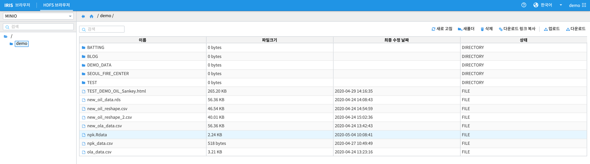

R 과 MINIO - (2) : R Object 를 MINIO 에 저장 / 다운로드¶
RStudio 에서 생성된 in-memory R Object 를 .Rdata 파일 로 MINIO 에 저장하거나
MINIO 에 .Rdata 파일로 저장된 R object 를 RStudio 의 memory 로 load 하는 예제 입니다.
R object 를 MINIO 로 저장하기 : s3save¶
먼저 minio.s3 패키지의 설치 와 AWS 환경변수 설정하기 를 확인합니다.
R 에서 프로그래밍 중에 생성되는 1개 또는 여러 개의 in-memory R-object 는 .Rdata 파일 포맷으로 MINIO 에 저장합니다.
아래 예제는 R 에 내장되어 있는 데이터셋 중 하나인 npk 를 object 로 저장하는 예시입니다.
> str(npk)
'data.frame': 24 obs. of 5 variables:
$ block: Factor w/ 6 levels "1","2","3","4",..: 1 1 1 1 2 2 2 2 3 3 ...
$ N : Factor w/ 2 levels "0","1": 1 2 1 2 2 2 1 1 1 2 ...
$ P : Factor w/ 2 levels "0","1": 2 2 1 1 1 2 1 2 2 2 ...
$ K : Factor w/ 2 levels "0","1": 2 1 1 2 1 2 2 1 1 2 ...
$ yield: num 49.5 62.8 46.8 57 59.8 58.5 55.5 56 62.8 55.8 ...
> npk$N <- as.character(npk$N)
> npk$P <- as.character(npk$P)
> npk$K <- as.character(npk$K)
> str(npk)
'data.frame': 24 obs. of 5 variables:
$ block: Factor w/ 6 levels "1","2","3","4",..: 1 1 1 1 2 2 2 2 3 3 ...
$ N : chr "0" "1" "0" "1" ...
$ P : chr "1" "1" "0" "0" ...
$ K : chr "1" "0" "0" "1" ...
$ yield: num 49.5 62.8 46.8 57 59.8 58.5 55.5 56 62.8 55.8 ...
> npk_desc <- summary(npk)
> npk_desc
block N P K yield
1:4 Length:24 Length:24 Length:24 Min. :44.20
2:4 Class :character Class :character Class :character 1st Qu.:49.73
3:4 Mode :character Mode :character Mode :character Median :55.65
4:4 Mean :54.88
5:4 3rd Qu.:58.62
6:4 Max. :69.50
# 4분위수 구하기
> npk_q <- quantile(npk$yield, c(0, 0.25, 0.5, 0.75, 1), type=1)
> npk_q
0% 25% 50% 75% 100%
44.2 49.5 55.5 58.5 69.5
in-memory object 인 npk, npk_desc, npk_q 를 .Rdata 파일로 MINIO 에 저장합니다.
s3save ( npk , npk_desc, npk_q, bucket = "demo" , object = "npk.Rdata" , use_https = F )
MINIO 에 저장된 R object load 하기 : s3load¶
MINIO 에 저장된 npk.Rdata 파일을 확인합니다.
{kind=link}
대화형 분석 RStudio 에서 load 합니다.
# R 의 object 에서 npk_q, npk_desc 가 없음을 확인합니다.
> npk_q
Error: object 'npk_q' not found
> npk_desc
Error: object 'npk_desc' not found
# s3load 로 npk.Rdata 파일에서 object load
> s3load("npk.Rdata", bucket = "demo", use_https = F)
> npk_q
0% 25% 50% 75% 100%
44.2 49.5 55.5 58.5 69.5
> npk_desc
block N P K yield
1:4 Length:24 Length:24 Length:24 Min. :44.20
2:4 Class :character Class :character Class :character 1st Qu.:49.73
3:4 Mode :character Mode :character Mode :character Median :55.65
4:4 Mean :54.88
5:4 3rd Qu.:58.62
6:4 Max. :69.50
# npk 역시 N, P, K 의 타입이 factor 에서 character 로 변경된 dataframe 으로 load 된 것을 확인합니다.
> str(npk)
'data.frame': 24 obs. of 5 variables:
$ block: Factor w/ 6 levels "1","2","3","4",..: 1 1 1 1 2 2 2 2 3 3 ...
$ N : chr "0" "1" "0" "1" ...
$ P : chr "1" "1" "0" "0" ...
$ K : chr "1" "0" "0" "1" ...
$ yield: num 49.5 62.8 46.8 57 59.8 58.5 55.5 56 62.8 55.8 ...